How to use "PokeCom", the Windows desktop emulator · 日本語版
1. Starting up and the window
The emulator comes as an installer (…-setup.exe) and as a zip. Both bundle the .NET runtime, so nothing else needs to be installed. From the release after 0.0.4 on, the release notes list each file’s SHA-256: compare it with what PowerShell’s Get-FileHash file prints to check a download.
Requirements: Windows 10 / 11, 64-bit (x64). About 2 cores at 2 GHz or more and 4 GB of memory or more are recommended (the app itself uses about 150 MB). About 120 MB of disk; a display of 1280×800 or more is recommended.
Kind
Start
Where ROMs, RAM and settings live (the data folder)
Installer
PC-E500 Emulator in the Start menu
%LocalAppData%\PockeComE500\ (per user)
Zip
PC-E500.exe in the unpacked folder
The folder of PC-E500.exe; copy the whole folder elsewhere and it keeps working
The installer first asks whether to install for you only or for all users (all users needs an administrator). Either way the data folder is per user. PC-E500 Emulator data folder in the Start menu, or Open the data folder in the right-click menu, opens it. Uninstalling leaves the data folder.
The data folder holds the following (with the zip, beside PC-E500.exe).
Folder
Contents
rom\
Internal ROM images, loaded at start-up. A ROM opened from elsewhere with Open ROM is opened again at the next start
Settings, controller mappings, internal RAM contents, automatic snapshots, backups taken before a reset
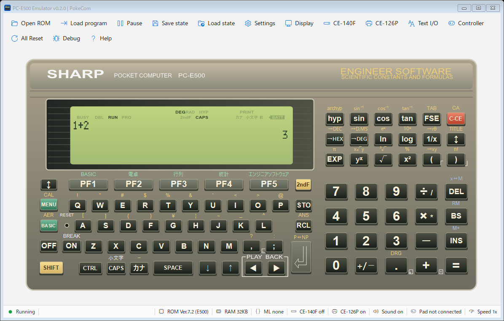
The main window: toolbar on top, the machine in the middle, the status bar at the bottom.
The status bar at the bottom is split into fields: the machine's state at the left (a green dot running, yellow paused, grey switched off; click it to pause or resume), messages next to it (for five seconds, in place of the fields at the right), and at the right the ROM version, internal RAM and the RAM card, the machine-code area, the CE-140F, the CE-126P, sound, the controller (only while "Use a controller" is ticked; it is by default) and the speed. Hover for the details. The memory field opens Settings, the ML field the window that sizes the machine-code area, the CE-140F and CE-126P fields open their windows, the controller field opens the Controller window, the sound field mutes or unmutes, and the speed field goes round 0.5x → 1x → 2x → 4x (use 1x when checking sound). In a narrow window the fields at the right switch to short forms one by one ("off", "1x" and the like; hover for the full text), and only then do the leftmost go.
The UI language (Japanese / English) is chosen in Settings. The first run follows the Windows display language.
2. First steps
On the first start (or whenever memory is empty) the machine asks you to initialise memory, just like the real one.
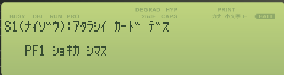
"New card / PF1 initialises" (NEW CARD on English ROMs; the Japanese ROM shown here says the same in katakana)
Press PF1 (F1 on the PC keyboard) to initialise memory. When you attach a new RAM card the machine asks the same for the card. Large capacities take a few seconds.
Right after initialisation
Press BASIC (F7). RUN lights up at the top of the LCD and BASIC is ready.
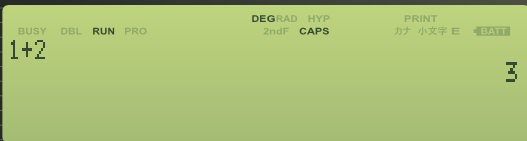
Type 1+2 and Enter; the answer 3 appears at the right
Type 1+2 and press Enter. The result is displayed.
Entering a program
Numbered program lines are entered in PRO mode. Pressing BASIC again toggles between RUN and PRO.
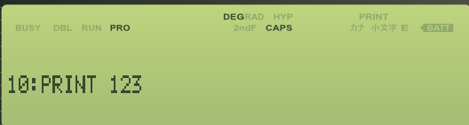
10 PRINT 123 entered in PRO mode
When you are done, press BASIC to return to RUN, type RUN and press Enter.
Result of RUN
Entering a numbered line while in RUN mode gives Syntax error. Switch to PRO before typing a program.
3. Keys
Click the keys on the screen or use the PC keyboard. Letters are sent to the pocket computer as upper case.
PC key
Pocket computer
Letters, digits, space, operators
The matching key. Symbols such as ":$ are turned into SHIFT sequences automatically
Enter / BackSpace / Delete / Insert
ENTER / BS / DEL / INS
Arrow keys
Cursor movement
F1–F5
PF1–PF5 (function keys)
F6
MENU
F7
BASIC (toggles RUN / PRO)
F8
2ndF
Esc
ON/BRK (power on, break)
Ctrl / Shift
CTRL / SHIFT
Ctrl+C / Ctrl+V / Ctrl+D
Open Text I/O / paste the clipboard / open Debug
Clicking SHIFT or CTRL on the screen holds it down until the next key. Click again to release.
The real machine scans the keyboard 64 times a second, so about 18 keys per second is the limit. While a PC key is down, the machine's key is held down, and it comes up when you let go, as on the real keys. Only the keys the ROM repeats (BS, DEL, left and right) repeat when held. Input through a Japanese IME is not supported.
Game controller
Controller on the toolbar maps the machine's keys to the buttons of a gamepad. XInput (Xbox-style) pads and Windows game controllers (DirectInput) work. While a pad button is down, the machine's key is held down.
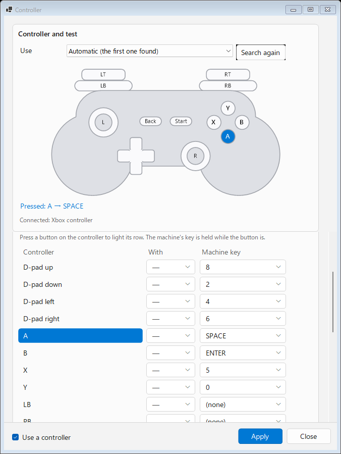
The Controller window. A pressed button lights up both on the picture and in the list
Item
What it does
Use, Search again
Chooses the pad to use. "Automatic (the first one found)" takes the first one found. After plugging a pad in, press Search again (a pad plugged in or out is also found on its own)
The pad picture
The buttons you press light up, and it shows where the sticks are and how far the triggers are pressed. The "Pressed: …" line below shows the buttons and the machine's keys. Click a button on the picture to go to its row
Presets
Keep as many sets of mappings as you like. Add... copies the preset shown into a new one; Rename... and Delete are there too. Two come built in: "Number keys 2/4/6/8" (the default) and "Cursor keys"
Buttons
Choose the machine key for each button (columns Controller, With, Machine key). "With" presses SHIFT or CTRL along with it
Match button places...
On a DirectInput pad whose button numbers do not sit where the picture puts them, press the buttons at the places shown, one by one (Skip and Stop are there too)
Use a controller
Untick it and the pad is not used
Apply saves to state\controller.json.
The pad works only while the main window is in front. When another window is in front, the keys it holds are let go.
4. Toolbar buttons
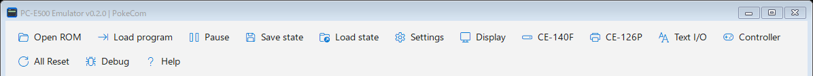
The toolbar
Button
What it does
Open ROM
Switches to another ROM image (256KB PC-E500, E550, 1480U, 1490U or 1490UII, or 384KB PC-E650/PC-U6000)
Load program
Loads a BAS or BIN file from the PC into the machine; dropping a file on the window does the same (chapter 7)
Pause / Resume
Stops the machine. Keys are not accepted while paused
Save state / Load state
Saves the current state to a snapshot file, or restores one (chapter 11)
Settings
Language, appearance, internal RAM, RAM card, CE-140F, volume and more (chapter 6)
Display
The real LCD look, the LCD contrast and the window view (chapter 6)
CE-140F
Shows the drive X: transfer log and opens its folder (chapter 7)
CE-126P
Shows the printer's paper, saved or copied as text or a picture; the printer is connected or disconnected here (chapter 7)
Text I/O
Copies the LCD text or types clipboard text into the machine (chapter 8)
Controller
Maps the machine's keys to the buttons of a gamepad (chapter 3)
CPU registers, memory view and editing, BIN load/save (chapter 10)
Help
Opens this manual
Settings, Display, CE-140F, CE-126P, Text I/O, Controller, Machine-code area and Debug stay open while the machine runs. Pressing the same button again brings the open window to the front. Settings, Controller, Text I/O and CE-126P cannot be made wider, as their content would not change; they can be made taller. Debug can be made narrower, but not wider than it opens.
Every sub-window is built the same way: the content on cards with headings, the buttons such as Close in a footer at the bottom right (the one Enter presses, in the accent colour, left of Close), and checks such as Auto refresh and Connected, and result messages, at the left of the footer.
Right-click menu and views
Right-click the case (or anywhere in the window) for a menu with the same commands as the toolbar, plus the speed, the window view, Always on top, Check for a new version..., Machine-code area..., Open the data folder, Minimize and Exit. The menu is the same in every view, so it is always the way back from a view without the toolbar or title bar.
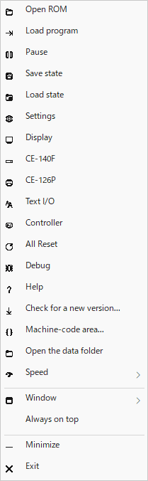
The right-click menu
A double-click on the case away from the keys steps through the window views. A double-click on a key is simply two keystrokes.
View
What shows
1. Normal
The usual window, with the title bar, toolbar and status bar
2. Case only
No window frame or bars, just the case. Drag the case to move the window
3. Screen only
No case either, just the LCD. A double-click here goes back to 1
The LCD keeps its place and size through the change. Typing on the PC keyboard works in every view.
In views 2 and 3, drag the edge of the case (or of the LCD) to resize; the proportions are kept and the opposite side stays put. The view, its size and its place are saved, and the next start opens in that view (a place that is on no screen any more is not used).
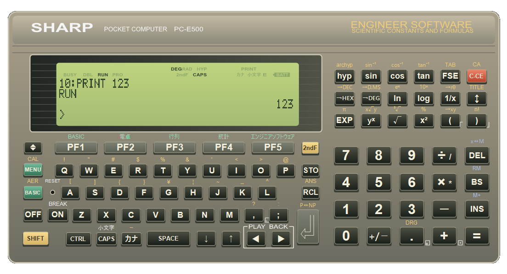
2. Case only3. Screen only
New versions and updating
At start-up, once a day at most, the emulator asks GitHub whether a new version is out. If one is, a button such as New version v0.2.1 appears at the right end of the toolbar (and at the top of the right-click menu). It shows what changed, and Open the download page opens the release page. The emulator never downloads or replaces anything itself.
Quit the emulator.
From the release page, download the …-setup.exe if you installed it, or the zip if you use the zip.
Run the installer, or unpack the zip over the folder that holds PC-E500.exe now.
Either way, ROMs, RAM, settings and state stay as they are (the installer does not touch the data folder, and the zip holds nothing in rom, ram, drive-x or state). The notice shows the steps for the kind you use.
Check for a new version... in the right-click menu checks at any time. After Skip this version, the automatic check no longer announces that version. The automatic check can be turned off in Settings.
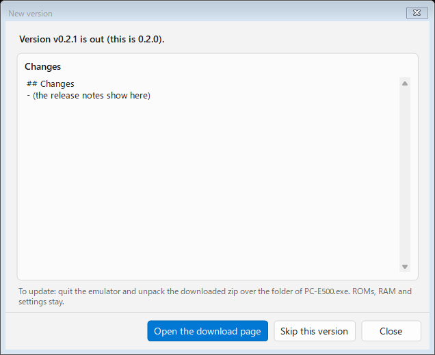
A new version announced
5. RAM cards
A RAM card is the memory card that plugs into the real machine's card slot. In this emulator one card is one image file: the file size is the card's capacity (8 / 16 / 32 / 64 / 128 / 256 KB) and its bytes are the card's contents. Make as many cards as you like and swap them just as you would real ones.
The card's contents are written back to its image file every 5 seconds, at power off, at exit and when the card is removed.
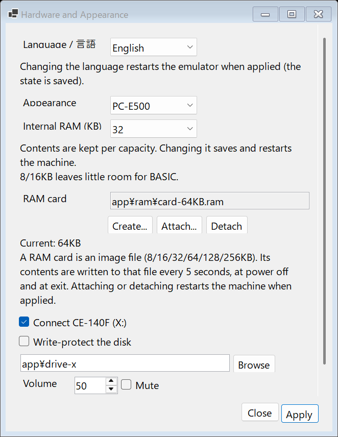
The RAM card row in Settings, where cards are created, attached and detached
Creating a card
Open Settings from the toolbar and press Create... in the RAM card row.
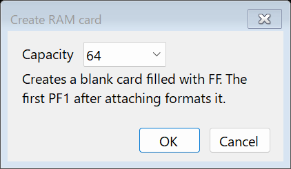
Choose the capacity
Choose a capacity and press OK. You are asked where to save the file; keep it in app\ram\ (any file name is fine).
Press Apply. The current contents are saved, the machine restarts with the card attached.
The ROM asks to initialise the new card: press PF1 (F1).
The memory field of the status bar shows RAM 32KB+64KB or similar once the card is in (hover for the card's file name).
Swapping and removing
Task
How
Swap to another card
Settings → Attach..., pick another image file, Apply. The current card is saved to its file before the switch
Remove the card
Settings → Detach → Apply. The slot is empty
Duplicate a card
Copy the image file in Explorer (with the emulator closed or the card detached)
Swapping RAM cards does not touch internal RAM, and changing the internal RAM size does not touch the card.
Do not modify the attached image file with other software while the emulator is running: the 5-second autosave will overwrite it.
6. Settings
Open with the Settings button. It is split into Display, Machine, CE-140F, and Sound, power and more. Changes take effect with Apply; changes to internal RAM or the RAM card save the current contents and restart the machine.
Item
Meaning
Language / 言語
Japanese or English for all windows and messages. Applying a new language restarts the emulator (the state is saved first)
Theme
Light or dark windows: as Windows (the default), light or dark. Applying a new theme restarts the emulator
Appearance
PC-E500 or PC-E650 case. The PC-U6000 has the same case as the PC-E650; use the PC-E500 case for the PC-E550, PC-1480U, PC-1490U and PC-1490UII. Appearance does not change the ROM: pick the matching ROM with Open ROM
Internal RAM (KB)
8–256KB. Contents are kept per capacity, so switching back restores what that size held. With an E650/U6000 (384KB) ROM the choices are the stock 64KB or the 128KB/256KB expansion mod
On (the default), the machine switches itself off after about 10 minutes without a key, as the real one does. Off, it stays on
Always on top
The main window is never hidden under other windows. The right-click menu switches it too
Check for a new version at start-up
Asks GitHub once a day at most and announces a new version (chapter 4). Off, it asks only when you check from the menu
Display
Open with the Display button. Changes show at once and are saved to the settings when the window closes.
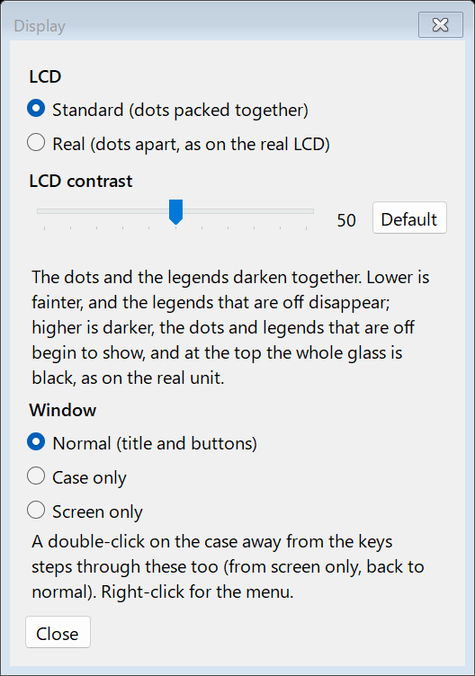
The Display window
Item
Meaning
LCD
Standard packs the dots together with no gaps. Real leaves a little space between the dots, as on the real LCD
Afterimage (frame interpolation)
Dots turn on and off over one or two frames, keeping a picture caught half redrawn from flickering (close to the slow real LCD). Something that moves a dot at a time (a game's ship, scrolling stars) is drawn sliding smoothly from its last place to the next (the lines between the dots in the Real look do not move, and a moving picture shows up to one step late). On by default. The screen is drawn with each refresh of the display, so movement runs evenly without it too
LCD contrast
Like the contrast dial on the real unit, the dots and the legends darken together: lower is fainter and hides the legends that are off; higher is darker and shows the dots and legends that are off, until at the top (100) the whole glass is black. Default returns to the usual level (50)
Window
Normal, case only or screen only (the same as the double-click in chapter 4)
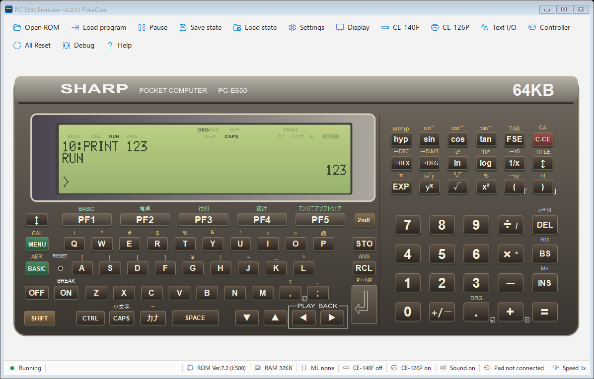
Appearance set to PC-E650
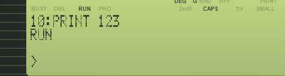
The LCD in the real display
7. CE-140F and CE-126P
CE-140F (drive X:)
The CE-140F floppy drive is emulated with a PC folder as the disk. The default folder is drive-x\ in the data folder (chapter 1); Settings can point it elsewhere.
SAVE "X:TEST.BAS" ' save a program
SAVE "X:TEXT.BAS",A ' save as ASCII
LOAD "X:TEST.BAS" ' load
FILES "X:" ' list
An ASCII file is saved without a closing 1Ah (EOF), as a hardware CE-140F emulator saves it. A file that ends with 1Ah loads as it is.
OPEN / PRINT # / INPUT # file I/O and COPY, NAME, KILL, SET and INIT work too. File names are 8.3 with letters, digits, _ and -.
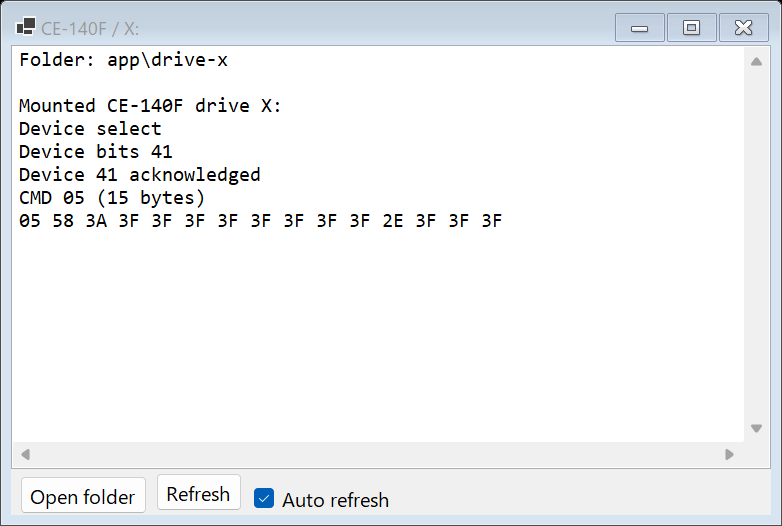
The CE-140F window; the log refreshes every 0.5 seconds
INIT deletes the disk files in the folder. Point the CE-140F at a folder of its own.
Loading a file (Load program)
Pick a file with Load program on the toolbar, or drop it on the window. With Run after loading (RUN for a BAS) ticked at the bottom of the file window, a BAS is loaded with LOAD "X:name",R and runs at once. The tick is remembered, and a dropped file follows it too. Files load one at a time: the next cannot load until the keys the last one types (a machine-code area reservation, a LOAD) are done.
File
How it loads
BAS (as the machine saves it)
Written straight into RAM. No LOAD is typed, and neither the CE-140F nor a BASIC mode is needed (not while a program runs). It replaces the program in memory and leaves the variables. With "Run after loading", RUN is typed when BASIC's RUN or PRO prompt is up. A file with a password loads as a text one does
BAS (text)
Put in the CE-140F folder, then LOAD "X:name" is typed. Connect the CE-140F and be at BASIC's RUN or PRO prompt (not while a program runs). The name is cut down to the 8.3 form (my prog.bas becomes MYPROG.BAS); another file of that name is overwritten only if you agree
BIN (with the SAVE M header)
Written straight into memory at the address in the header. The whole range must lie in the internal RAM or the RAM card there now (an address with no RAM is not loaded). When the range lies only in free space outside the machine-code area (BASIC's free space), you are asked whether to reserve the machine-code area first (Yes reserves and then writes, No writes without reserving, Cancel does nothing). When it touches space in use (BASIC's program, variables, stacks, work areas, the system and so on), it is not written as it is; only when that range can be reserved as the machine-code area first are you asked whether to reserve it and then load. Reserving works at BASIC's RUN or PRO prompt. For a BIN that could not be loaded, or one without the header, use Load BIN in the debugger (chapter 10) and give the address
To exchange files with a real machine, use the normal form (no ,A). A text (ASCII) LOAD through a hardware CE-140F emulator ends with an error such as "Undefined line", a bug of the hardware emulator (with a line end on every line, all lines do arrive). The normal form and machine code (SAVE M) give the very files the real machine saves, and exchange without trouble. A text file becomes the normal form when the emulator LOADs it and saves it with SAVE "X:...".
CE-126P (printer)
The CE-126P thermal printer is emulated. The ROM's own printer routines run unchanged, so LPRINT, LLIST and PRINT=LPRINT work as they are and print 24 columns.
LPRINT "HELLO" ' print a line
LLIST ' print the program listing
PRINT=LPRINT ' send PRINT to the printer (PRINT=PRINT undoes it)
CE-126P on the toolbar shows the paper, drawn in the ROM's character font. Copy text, Save text and Save image (PNG) keep it; Clear empties the paper.
Print to sends the lines on to a printer as well (kept in the settings). A USB thermal printer (58 mm, 384 dots, ESC/POS, such as the MPT-II) prints each line as it comes, with no driver, and the paper is fed 12 mm once printing has paused for 3 seconds. A Windows printer gets the lines since its last job as one job, at their real size (2 mm a character, 4 mm a line), once printing has paused for 3 seconds. Print paper sends the whole paper. A printer that cannot be reached is reported at the bottom of the window; the machine goes on.
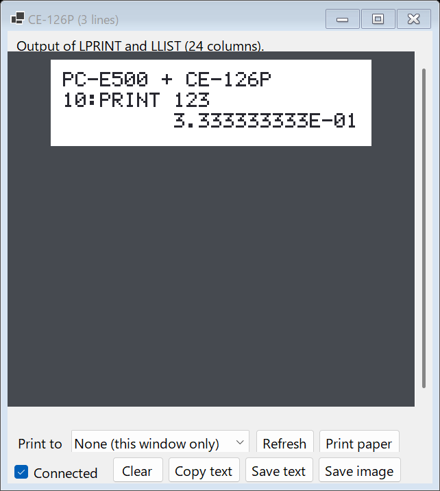
The CE-126P window, after LPRINT and LLIST
Untick Connected and the ROM skips LPRINT and the like without an error, as on a real machine with no printer. Untick it in the middle of a line and you get Printer error. The setting is kept.
It shares the 11-pin bus with the CE-140F; both work together.
The paper keeps up to 2000 lines, dropping the oldest. It is not part of a snapshot (a snapshot taken mid-line prints that line again in full when loaded).
Printing takes no time. Saved as text, signs such as ¥ come out as printed.
8. Copying and pasting text
Text I/O on the toolbar (or Ctrl+C) reads the LCD as 40 columns by 4 rows of text. Drag to select and press "Copy selection" to put it on the clipboard.
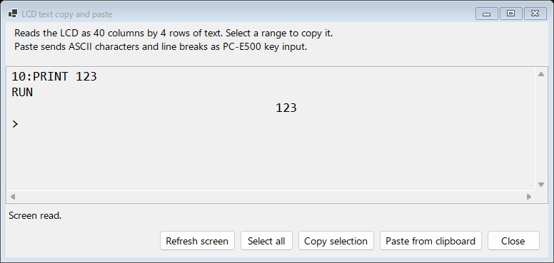
The Text I/O window
"Paste from clipboard" (or Ctrl+V) sends the clipboard text to the machine as key presses. Line breaks become ENTER and tabs become four spaces, which makes it easy to feed in a long BASIC listing. Up to 4096 characters at a time, typed at the real machine's key rate; raise the speed for long listings.
9. Reset
Action
Effect
Click the RESET hole (between BASIC and A)
Restarts only the CPU, LCD, keys and external bus. Internal RAM and the RAM card are kept
All Reset on the toolbar
The real machine's ON+RESET. The ROM asks whether to erase all data: Y erases everything, N resumes as before
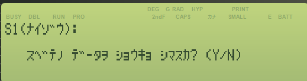
Right after All Reset; answer Y or N
The state just before an All Reset is saved to state\before-reset-<date>.e500state in the data folder, so an accidental erase can be undone with Load state. Neither reset erases the RAM card.
10. Debug
Open with Debug on the toolbar (or Ctrl+D). It follows the running machine and refreshes every 0.25 s (untick "Auto refresh" to update only with the Refresh button).
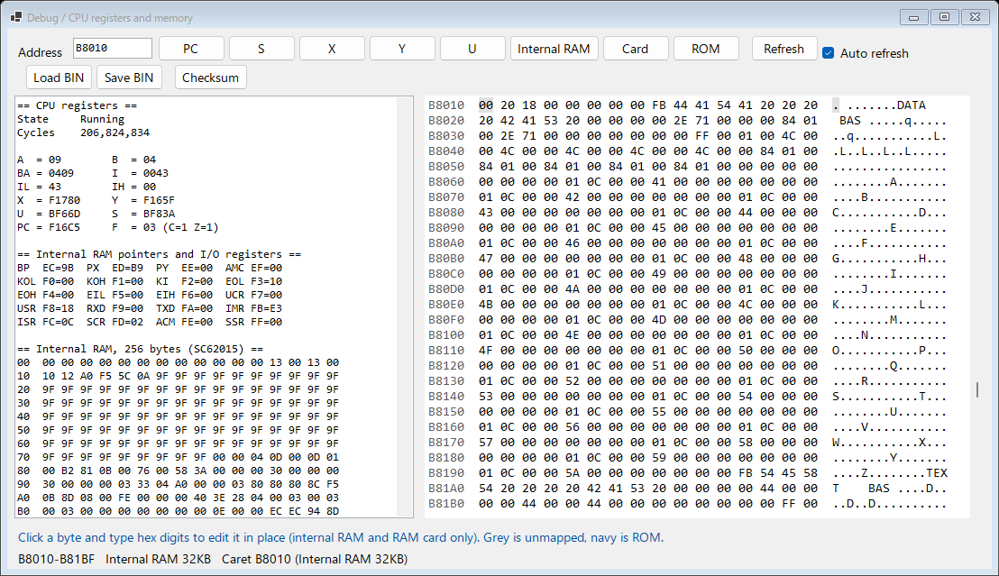
The memory map on top, CPU registers and the SC62015 internal RAM on the left, memory on the right
Top
The internal RAM (and the RAM card) as a coloured bar. Click a region to take the memory view to its start; the marker under the bar is where the view is. Hover for the name, range and size
Left
A, B, BA, I, IL, IH, X, Y, U, S, PC and F as tiles, the run state as a coloured badge, the C and Z flags as lamps, and the cycle count; then the 256 bytes of internal RAM with the BP/PX/PY pointers and the KOL–SSR I/O registers
Right
Memory from 00000 to FFFFF in hex, 16 or 8 bytes a row (chosen on the toolbar; 16 by default), each group of eight followed by ": XX", its checksum. Move with the scrollbar, the mouse wheel, the arrow keys, PageUp/PageDown and Ctrl+Home/End
Address box
Type a hex address and press Enter (B8000, &HB8000 or 0xB8000). PC, S, X, Y and U jump to where each register points; Internal RAM, Card and ROM jump to the start of each region
Bottom
Which region the visible range and the caret are in
Region colours
Black
Internal RAM, the RAM card and their mirrors — editable
Blue
Internal ROM (CE2) and the E650/U6000 extension ROM (CE3) — read only
Grey
Nothing connected (the card slot without a card, CE6, the internal area, …)
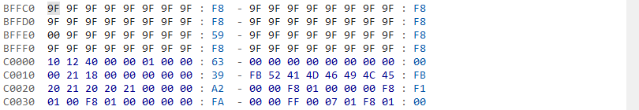
Internal RAM (black) turning into internal ROM (blue) at C0000
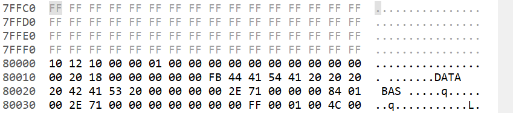
The empty card slot (grey) meeting the internal RAM mirror (black) at 80000
Editing memory (hex editor)
Click the byte you want to change. The caret lands on it and the bottom line names its address and region.
Type 0–9 or A–F. Each digit is written immediately, high nibble first; after two digits the caret moves to the next byte, so you can keep typing.
The arrow keys move the caret. Edits are autosaved like any other RAM change.
Only the black regions (internal RAM and the RAM card) can be edited. Typing over ROM or grey areas changes nothing and the bottom line says why.
After each ":" in the memory view is the low byte of the sum of the eight bytes before it (in blue). Machine code listings in magazines print this value for every eight bytes, so a program typed in can be checked line by line. It changes as you edit.
Loading and saving BIN files
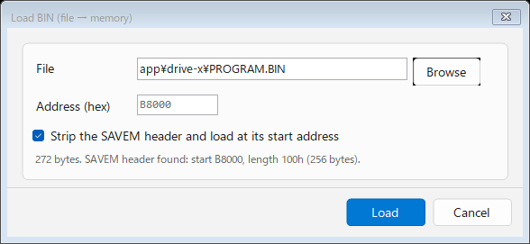
Load BIN, with a SAVEM header detected
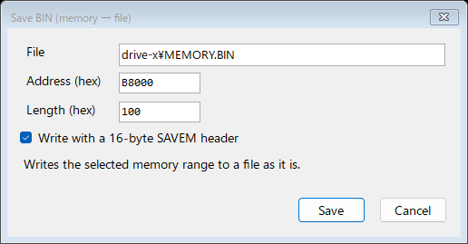
Save BIN; with the header the file goes back where it came from
Load BIN
Writes a file into memory at the given address. Files made by the CE-140F SAVE M carry a 16-byte header; it is detected and the data goes to the start address recorded in it (untick the box to load anywhere). The target must lie entirely in RAM, otherwise nothing is written
Save BIN
Writes the given length (hex) from the given address to a file. By default the same header as SAVE M is added, so the file can be put back with LOAD M or Load BIN
When trying machine code, reserve an area BASIC does not use rather than writing at the very start of internal RAM (B8000 on a 32KB PC-E500, B0000 on a 64KB E650/U6000). To reserve one, set the size in the ML field of the status bar (or Machine-code area... in the right-click menu) and press Apply: the machine's own ROM routine (POKE &HBFE03,...:CALL &HFFFD8) is typed for you and takes that many bytes below BFBFF; 0 gives them back (the size given is the size the area ends up). The window shows the internal RAM now and after applying as two bars. Use it at BASIC's RUN or PRO prompt. The ROM ends at the main menu, BASIC comes back, and the BASIC program and variables stay. Loading a BIN reserves nothing, so when Load program puts a BIN outside the area you are asked whether to reserve it first (chapter 7). Edits are autosaved at once; if you break a system area, an All Reset (chapter 9) puts things right.
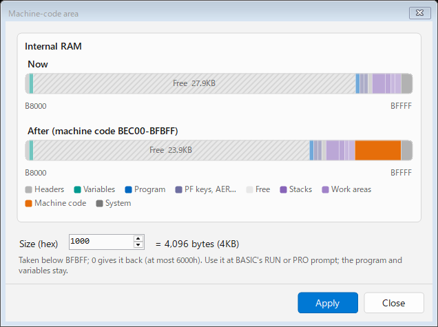
The machine-code area window: the internal RAM now and after applying
11. Saving and restoring
Memory survives power off and exit without you doing anything. It is kept in the data folder (chapter 1).
Internal RAM
Saved under state\memory\ every 5 seconds, at power off and at exit; one file per capacity
RAM card
Saved to the attached image file at the same moments
Snapshot
CPU, internal RAM, LCD, timers and where the printer and CE-140F are on the bus are saved automatically to state\; the next start resumes from there
Settings
state\settings.json (also the window view, the LCD contrast, the printer connection and so on)
Controller
state\controller.json (the presets and mappings)
Save state and Load state on the toolbar keep and restore a snapshot (.e500state) of your choice.
A snapshot holds the CPU and internal RAM. The RAM card is not part of it: after a load the card keeps what its image file holds. A snapshot cannot be loaded with a card of a different capacity in the slot (one saved without a card is loaded without a card).
Snapshots cannot be saved or loaded during a CE-140F transfer or with a file OPEN. CLOSE first. While the printer prints, saving works at any time.
A file saved by a newer version cannot be loaded by an older one (it says it was made by a newer version); files from older versions load in newer ones.
12. Troubleshooting
"NEW CARD" (or its katakana equivalent) at start-up
The machine may be off: press Esc (ON/BRK). Also check that it is not paused
Syntax error when entering numbered lines
You are in RUN mode. Press BASIC (F7) for PRO
No sound, or choppy sound
Check Mute and Volume in Settings. At 2x and 4x the audio is not in sync with the real machine; check at 1x
The card capacity did not change
Did you press Apply in Settings? Hover over the memory field of the status bar for the attached card's name
Load state says the RAM card differs
Attach (or detach) a card of the same capacity as at save time before loading (chapter 11)
I want to wipe internal RAM
All Reset and answer Y. The previous state is backed up automatically (chapter 9)
I broke memory by mistake
Load state\before-reset-*.e500state from the data folder, or a snapshot you saved, with Load state
I want to use a PC-E650 / PC-U6000
Put the merged 384KB ROM image (chapter 13) in rom\ in the data folder, pick it with Open ROM and set the appearance to PC-E650
A 256KB Ver.8 ROM starts with lines across the screen and stops there
Ver.8 ROMs (E650/U6000, E500S) come as a main part (S3A) and an extension (S3B); the main part alone does not start. Dump S3B from the same machine as well and merge them into a 384KB image (chapter 13)
Where do ROMs and data go?
In rom\ in the folder that Open the data folder in the right-click menu opens (%LocalAppData%\PockeComE500\ when installed, beside PC-E500.exe with the zip; chapter 1)
The controller does nothing
Check that the main window is in front (the pad does nothing while another window is). Also check Use a controller in the Controller window, and that the status bar says "Pad connected" (chapter 3)
LPRINT prints nothing
Connected is unticked in the CE-126P window (chapter 7)
The title bar and buttons are gone
That is the case-only or screen-only view. Window → Normal in the right-click menu brings them back (chapter 4)
The installer shows "Windows protected your PC"
The installer is not signed. Choose More info → Run anyway
Open ROM refuses the file
Check that it is 256KB or 384KB (plus 16 bytes if it still has the header) and that it is not S3B alone (chapter 13)
Text saved by the emulator (,A) ends its LOAD on a real machine, from a hardware CE-140F emulator, with Undefined line or I/O error
A bug of the hardware emulator ends every text LOAD with an error. Have the emulator LOAD the file and SAVE it again without ,A, and pass on that file (chapter 7)
13. Dumping the ROM from a real machine
The emulator ships without the internal ROM. Take the ROM image from your own machine and put it in app\rom\. There are two ways. With no peripherals, use ROMDump, which records the buzzer. With a CE-140F or another device that saves files, the machine's SAVEM command (write memory to a file) does it.
With ROMDump (by sound)
PC-E500 BEEP ROMDump plays the ROM through the machine's buzzer; you record it with a phone, and an application on the PC (BeepDump) turns the recording back into a ROM file. No peripherals are needed.
Start recording, then type this at BASIC's RUN prompt (the 256KB main ROM; about 22 minutes).
CSAVE M &HC0000,&HFFFFF
Record it twice, so that a misreading is found. A PC-E650 / PC-U6000 needs its extension ROM recorded too.
Give the recordings to BeepDump and, when everything has been read, save the ROM. For a PC-E650 / PC-U6000 it is the merged 384KB file, so the merging below is not needed.
Name the file for its model and version, as PC-E500(7.2).ROM, and put it in the rom folder.
ROMDump is an experimental tool. Its own page has the models it takes, a faster machine-code version and the steps in full.
A CE-140F floppy drive or any other device on the 11-pin connector that can save files. A PC running CE-140F emulation software over an 11-pin cable works too. Anything that ends up as a file the PC can read is fine
Dumping with SAVEM
The syntax is as follows. d: is the device name of whatever you connected, and addresses are hex written with &H.
SAVEM "d:filename",start address,end address
Switch the machine on and press BASIC until RUN shows.
Dump the main ROM (every model). It is 256KB, so it can take a few minutes.
SAVEM "L:S3A.ROM",&HC0000,&HFFFFF
PC-E650 / PC-U6000 also need this one. Dump the extension ROM (128KB).
SAVEM "L:S3B.ROM",&H20000,&H3FFFF
Bring the files over to the PC.
L: is just an example. Use the device name of what you connected, for example X: for a CE-140F.
File
Range
Size
Contents
S3A.ROM
C0000-FFFFF
256KB + 16 bytes
Main ROM (CE2), needed for every model
S3B.ROM
20000-3FFFF
128KB + 16 bytes
Extension ROM (CE3), PC-E650 / PC-U6000 only
The header and how to fix files
A file written by SAVEM begins with a 16-byte header, which makes it 16 bytes larger than the ROM itself.
Offset
Contents
0–3
FF 00 06 01 (marks a machine-code file)
4
10
5–7
Data length, 3 bytes little-endian, e.g. 00 00 04 = 0x40000 = 256KB
Nothing. Put S3A.ROM in app\rom\ with its header, or pick it with Open ROM: the emulator recognises the header and loads just the ROM.
If you want a clean 256KB file, use the merge tool's --strip below, or drop the first 16 bytes in PowerShell:
S3A.ROM and S3B.ROM must be merged into one 384KB file (extension ROM first, main ROM after it). The merge tool below does this. Opening S3B.ROM on its own shows a message saying so.
A 256KB file whose name contains E650 or U6000 is refused as an unmerged dump. Naming ROMs model(version).ROM (for example PC-E500(7.2).ROM, PC-E650(8.5).ROM) keeps them apart, and the automatic choice at start-up then takes the newest version of a model. The status line shows the version as "ROM Ver.".
Using the merge tool (tools\merge_savem_rom.py)
Python 3 is required (python.org). Run the commands from a Command Prompt or PowerShell in the folder above app (the one that contains tools).
Removes the first 16 bytes from each file without merging. The originals are overwritten, so copy them first if you want to keep them
Merge with an already stripped main ROM
python tools\merge_savem_rom.py S3B.ROM --main-rom PC-U6000.rom --layout full -o app\rom\PC-U6000-full.rom
Pass a main ROM that is already a clean 256KB file with --main-rom
The tool prints the coverage. Anything but 100.0% means the dump is incomplete: check the missing ranges and dump again. The SHA-256 it prints lets you compare ROM images.
Checking the result
Put the file in app\rom\ and pick it with Open ROM (a 256KB PC-E500 ROM is loaded automatically at start-up).
Check that the status bar shows something like ROM Ver.7.2 (E500) (hover for the size). The version is read from the ROM contents, not the file name.
When the initialisation prompt appears and the calculation from chapter 2 works, you are done.
14. Scope and license
Implemented: SC62015 CPU, 256KB / 384KB ROM, internal RAM and RAM card, two HD61102 LCD controllers (240×32 dots), key matrix, timer interrupts, ON/BRK and OFF, speed selection, state save/restore, BEEP, folder-based CE-140F, CE-126P printer.
Not implemented: printers other than the CE-126P, cassette, RS-232C, clock. LCD busy time is not simulated. Machine-code programs and programs that use peripherals may behave differently from the real machine.
Ported from matsumo/PockEmul (CPU core Copyright (C) Matsumo 1998,1999) and provided under the GPL. See app\LICENSE and app\THIRD_PARTY_NOTICES.md. ROM images are not included; dump them from your own machine (chapter 13).
Ubuntu, the Mac, the command line (pokecom), the MCP server for AI tools, and building and testing are in the manual on GitHub.
Verified to work with ROMs of the PC-E500, PC-E550, PC-1480U, PC-1490UII, PC-E650 and PC-U6000.